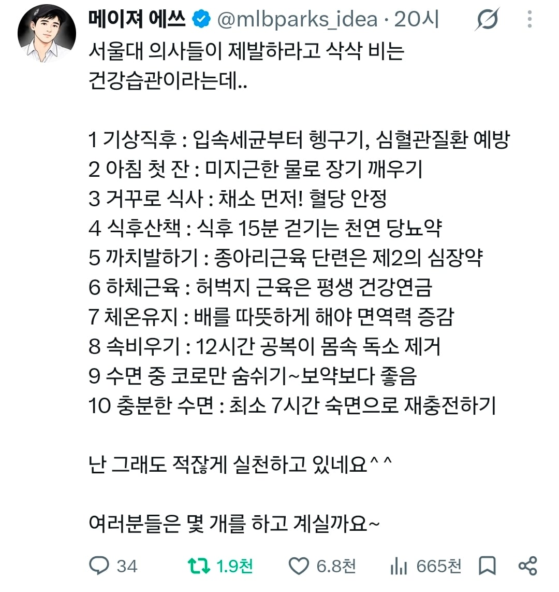

대부분 실천 중인 개붕이인데 8번은 어렵더라

대부분 실천 중인 개붕이인데 8번은 어렵더라
뭐가 문제임? 마냥 틀린 말도 없는 것 같은데
금식 일주일에 한번정도는 좋지않을까?
해초크림, 밀크씨슬 ㅇㄷ?
언제는 옷 벗고 차갑게 자라며
아침가글이랑 심혈관은 뭔상관인데
차라리 직장이 10km 미만이면 일주일에 두번은 걸어서 출퇴근 하는게 심혈관 건강에 더 설득력 있겠다.
입속세균이 몸속으로 들어가서 심장질환 일으킨대
그래서 아침먹기전에 양치하라고 하더라
?? 무슨 메커니즘이지
검색해봤는데
잇몸 염증으로 심혈관계 부담준다고하네
진짜 도움되는 정보) 건강 관련 글에 독소란 말이 등장하면 그냥 거르는 게 좋음
하면 좋은듯
서울대 ㅋㅋㅋ미국 영국도 아니고 작은 나라 의대가 뭘안다고
입속세균 어쩌고는 의미없다고 함
독소 보자마자 걸렀다
12시간 공복은 하면 뭐 미라클 어쩌구 이런게 아니고.. 그냥 적게 먹어서 몸에좋음
아침에 일어나자마자 양치하지않나 보통??
9번은안됨.,
지랄ㄴㄴ 나는 과민성대장증후군이라 아침 일어나자마자 물 마시면 장기가 깨어나는게 아니라 발작함
시발 ㅋㅋ 아무런 근거제시 없는 트위터 똥글에, 심지어 그마저도 '라는데...'로 끝나는 무지성 카더라 사이비의학 정보글인데 '해서 나쁠거 없는데?'라면서 옹호하고 있네 이딴거에 솔깃하는 놈들은 안아키 욕할 자격이 없다. 안아키같은 놈들이 딱 저렇게 널리 알려져있는 일반적인 진짜 의학정보와 지들만의 병신같은 구라선동정보 섞어서 멍청한 놈들 혹하게 만든 다음에, 점점 구라선동정보 위주로 강조하면서 광신도로 만들어서 자기들만의 왕국 만들고 비싸게 팔아먹는거임.
거진 개씹소리같은데
의사맞음? 독소이야기를 한다고?
아뇨아뇨~